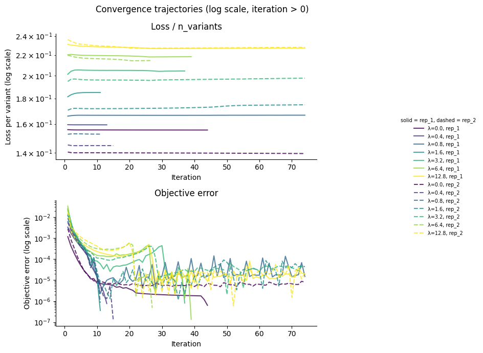

Model Evaluation¶
Evaluate fitted spike models: convergence diagnostics, sparsity analysis, replicate parameter correlations, global epistasis plots, and mutation parameter export.
Outline
Load fitted models and training data
Convergence diagnostics
Shift sparsity analysis
Replicate parameter correlations
Global epistasis plots
Export mutations DataFrame and intermediate CSVs
[1]:
import warnings
warnings.filterwarnings("ignore")
import os
import pickle
import sys
sys.path.insert(0, "notebooks")
import matplotlib.pyplot as plt
import numpy as np
import pandas as pd
import multidms.plot
from multidms.model_collection import ModelCollection
from _common import load_config, combine_replicate_muts
[2]:
config_path = "config/config.yaml"
[3]:
# Parameters
config_path = "config/config.yaml"
[4]:
config = load_config(config_path)
spike = config["spike"]
fit_config = spike["fitting"]
lasso_choice = spike["lasso_choice"]
condition_titles = spike["condition_titles"]
condition_colors = spike["condition_colors"]
experiment_conditions = spike["experiment_conditions"]
output_dir = "results"
Load data¶
[5]:
with open(os.path.join(output_dir, "fit_collection.pkl"), "rb") as f:
fit_collection_df = pickle.load(f)
func_score_df = pd.read_csv(
os.path.join(output_dir, "training_functional_scores.csv")
).fillna({"aa_substitutions": ""})
model_collection = ModelCollection(fit_collection_df)
print(f"Loaded {len(fit_collection_df)} fitted models")
print(f"Loaded {len(func_score_df):,} training variants")
Loaded 14 fitted models
Loaded 281,158 training variants
Convergence diagnostics¶
[6]:
# Build summary table with fitted alpha and beta0 parameters
summary_rows = []
for _, row in model_collection.fit_models.iterrows():
jm = row.model._jax_model
r = {
"dataset": row.dataset_name,
"fusionreg": row.fusionreg,
"converged": row.converged,
"fit_time": row.fit_time,
}
# Per-condition loss
for cond in experiment_conditions:
loss_col = f"{cond}_loss_training"
if loss_col in model_collection.fit_models.columns:
r[f"loss_{condition_titles.get(cond, cond)}"] = row[loss_col]
# Fitted alpha and beta0 per condition
for cond in experiment_conditions:
title = condition_titles.get(cond, cond)
r[f"alpha_{title}"] = float(jm.α[cond])
r[f"beta0_{title}"] = float(jm.φ[cond].β0)
summary_rows.append(r)
summary_df = pd.DataFrame(summary_rows)
print(f"{summary_df['converged'].sum()}/{len(summary_df)} models converged\n")
summary_df.round(3)
8/14 models converged
[6]:
| dataset | fusionreg | converged | fit_time | loss_Delta | loss_BA.1 | loss_BA.2 | alpha_Delta | beta0_Delta | alpha_BA.1 | beta0_BA.1 | alpha_BA.2 | beta0_BA.2 | |
|---|---|---|---|---|---|---|---|---|---|---|---|---|---|
| 0 | rep_1 | 0.0 | True | 979 | 3145.643 | 9480.089 | 8271.396 | 5.926 | 0.026 | 6.157 | 0.210 | 5.881 | 0.039 |
| 1 | rep_1 | 0.4 | True | 616 | 3354.925 | 9484.122 | 8565.297 | 6.099 | -0.044 | 6.352 | 0.135 | 6.051 | -0.025 |
| 2 | rep_1 | 0.8 | False | 1566 | 3879.316 | 9460.927 | 9037.758 | 5.989 | -0.003 | 5.792 | 0.342 | 6.469 | -0.196 |
| 3 | rep_1 | 1.6 | True | 627 | 5201.858 | 9484.436 | 10162.358 | 5.726 | 0.073 | 6.375 | 0.128 | 5.971 | 0.003 |
| 4 | rep_1 | 3.2 | True | 1075 | 6328.016 | 9474.818 | 11640.125 | 2.176 | 2.240 | 6.094 | 0.229 | 5.053 | 0.366 |
| 5 | rep_1 | 6.4 | True | 890 | 6596.412 | 9474.255 | 13239.243 | 2.078 | 2.628 | 6.073 | 0.237 | 4.370 | 0.684 |
| 6 | rep_1 | 12.8 | False | 1064 | 6637.644 | 9454.326 | 14417.683 | 2.004 | 3.428 | 5.710 | 0.371 | 4.064 | 0.508 |
| 7 | rep_2 | 0.0 | False | 1268 | 3597.770 | 7053.823 | 6735.751 | 5.941 | 0.009 | 5.851 | 0.358 | 5.299 | 0.344 |
| 8 | rep_2 | 0.4 | True | 652 | 3878.584 | 7085.026 | 7071.741 | 6.113 | -0.046 | 6.474 | 0.130 | 5.926 | 0.028 |
| 9 | rep_2 | 0.8 | True | 599 | 4446.659 | 7086.564 | 7485.129 | 6.121 | -0.042 | 6.515 | 0.115 | 5.964 | 0.012 |
| 10 | rep_2 | 1.6 | False | 1956 | 6054.117 | 7047.997 | 8673.261 | 2.702 | 1.868 | 5.794 | 0.378 | 5.205 | 0.363 |
| 11 | rep_2 | 3.2 | False | 1468 | 7226.702 | 7046.139 | 10349.027 | 2.368 | 2.256 | 5.770 | 0.388 | 4.542 | 0.700 |
| 12 | rep_2 | 6.4 | True | 808 | 7543.630 | 7080.425 | 12076.997 | 2.362 | 2.594 | 6.333 | 0.180 | 4.587 | 0.710 |
| 13 | rep_2 | 12.8 | False | 2079 | 7613.994 | 7045.438 | 13732.961 | 2.259 | 4.269 | 5.778 | 0.384 | 4.228 | 0.576 |
[7]:
conv_data = model_collection.convergence_trajectory_df(
id_vars=("dataset_name", "fusionreg")
)
conv_data.index.name = "step"
conv_data.reset_index(inplace=True)
# Normalize loss to per-variant scale
n_variants_map = {
(row.dataset_name, row.fusionreg): len(row.model.data.variants_df)
for _, row in fit_collection_df.iterrows()
}
conv_data["n_variants"] = conv_data.apply(
lambda r: n_variants_map[(r["dataset_name"], r["fusionreg"])], axis=1
)
conv_data["loss_per_variant"] = conv_data["loss_trajectory"] / conv_data["n_variants"]
plot_df = conv_data.query("iteration > 0")
# Color by fusionreg, linestyle by replicate
fusionreg_values = sorted(plot_df["fusionreg"].unique())
cmap = plt.cm.viridis
colors = {fr: cmap(i / max(len(fusionreg_values) - 1, 1)) for i, fr in enumerate(fusionreg_values)}
linestyles = {"rep_1": "-", "rep_2": "--"}
fig, axes = plt.subplots(2, 1, figsize=(8, 7))
for (ds, fr), grp in plot_df.groupby(["dataset_name", "fusionreg"]):
axes[0].semilogy(
grp["iteration"], grp["loss_per_variant"],
color=colors[fr], linestyle=linestyles.get(ds, "-"),
label=f"\u03bb={fr}, {ds}", alpha=0.8,
)
axes[1].semilogy(
grp["iteration"], grp["objective_error_trajectory"],
color=colors[fr], linestyle=linestyles.get(ds, "-"),
alpha=0.8,
)
axes[0].set_title("Loss / n_variants")
axes[0].set_xlabel("Iteration")
axes[0].set_ylabel("Loss per variant (log scale)")
axes[0].spines[["top", "right"]].set_visible(False)
axes[1].set_title("Objective error")
axes[1].set_xlabel("Iteration")
axes[1].set_ylabel("Objective error (log scale)")
axes[1].spines[["top", "right"]].set_visible(False)
# Legend outside the plot area
handles, labels = axes[0].get_legend_handles_labels()
fig.legend(
handles, labels, loc="center right", bbox_to_anchor=(1.18, 0.5),
frameon=False, fontsize=7, title="solid = rep_1, dashed = rep_2",
title_fontsize=7,
)
fig.suptitle("Convergence trajectories (log scale, iteration > 0)")
plt.tight_layout()
fig.subplots_adjust(right=0.78)
plt.show()

Shift sparsity¶
Fraction of shift parameters that are exactly zero, across the regularization grid. Uses the ModelCollection.shift_sparsity method which returns an interactive Altair chart faceted by dataset and shift parameter.
[8]:
sparsity_chart, sparsity_data = model_collection.shift_sparsity(return_data=True)
sparsity_chart
cache miss - this could take a moment
[8]:
Replicate parameter correlations¶
Correlation of mutation parameters (beta, shift) between replicates across the regularization grid. Uses the ModelCollection.mut_param_dataset_correlation method which returns an interactive Altair chart.
[9]:
corr_chart, corr_data = model_collection.mut_param_dataset_correlation(
return_data=True
)
corr_chart
[9]:
Global epistasis plots¶
Global epistasis (GE) landscape at the chosen lasso strength, showing the fitted sigmoid mapping from latent to observed phenotype.
[10]:
from IPython.display import display, Image
import tempfile
for ds_name in fit_collection_df["dataset_name"].unique():
representative = (
model_collection.fit_models
.query(f"fusionreg == {lasso_choice} and dataset_name == '{ds_name}'")
)
if len(representative) == 0:
print(f"No model at lasso={lasso_choice} for {ds_name}")
continue
model = representative.iloc[0].model
print(f"{ds_name} (fusionreg={lasso_choice}):")
chart = multidms.plot.ge_landscape(model)
with tempfile.NamedTemporaryFile(suffix=".png") as tmp:
chart.save(tmp.name, format="png", scale_factor=2)
display(Image(filename=tmp.name))
rep_1 (fusionreg=3.2):

rep_2 (fusionreg=3.2):

Export mutations DataFrame¶
Merge mutation parameters from both replicates at the chosen lasso strength.
[11]:
fit_dict = {}
for _, row in model_collection.fit_models.query(
f"fusionreg == {lasso_choice}"
).iterrows():
fit_dict[row.dataset_name] = row.model
mutations_df = combine_replicate_muts(fit_dict)
mutations_df["sense"] = np.where(
mutations_df["muts"].str.contains("*", regex=False),
"stop",
"nonsynonymous",
)
print(f"mutations_df: {len(mutations_df):,} mutations")
print(f" nonsynonymous: {(mutations_df['sense'] == 'nonsynonymous').sum():,}")
print(f" stop: {(mutations_df['sense'] == 'stop').sum():,}")
mutations_df.head()
mutations_df: 9,398 mutations
nonsynonymous: 9,188
stop: 210
[11]:
| mutation | wts | sites | muts | rep_1_beta_Delta | rep_2_beta_Delta | avg_beta_Delta | rep_1_beta_Omicron_BA1 | rep_2_beta_Omicron_BA1 | avg_beta_Omicron_BA1 | rep_1_beta_Omicron_BA2 | rep_2_beta_Omicron_BA2 | avg_beta_Omicron_BA2 | rep_1_shift_Delta | rep_2_shift_Delta | avg_shift_Delta | rep_1_shift_Omicron_BA2 | rep_2_shift_Omicron_BA2 | avg_shift_Omicron_BA2 | sense | |
|---|---|---|---|---|---|---|---|---|---|---|---|---|---|---|---|---|---|---|---|---|
| 0 | M1F | M | 1 | F | 0.000000 | 0.000000 | 0.000000 | 0.000000 | 0.000000 | 0.000000 | 0.000000 | 0.000000 | 0.000000 | 0.0 | 0.0 | 0.0 | 0.0 | 0.000000 | 0.000000 | nonsynonymous |
| 1 | M1I | M | 1 | I | -2.578499 | -2.037218 | -2.307858 | -2.578499 | -2.037218 | -2.307858 | -2.578499 | -2.454212 | -2.516355 | 0.0 | 0.0 | 0.0 | 0.0 | -0.416995 | -0.208497 | nonsynonymous |
| 2 | M1K | M | 1 | K | 0.000000 | 0.000000 | 0.000000 | 0.000000 | 0.000000 | 0.000000 | 0.000000 | 0.000000 | 0.000000 | 0.0 | 0.0 | 0.0 | 0.0 | 0.000000 | 0.000000 | nonsynonymous |
| 3 | M1L | M | 1 | L | 0.000000 | 0.000000 | 0.000000 | 0.000000 | 0.000000 | 0.000000 | 0.000000 | 0.000000 | 0.000000 | 0.0 | 0.0 | 0.0 | 0.0 | 0.000000 | 0.000000 | nonsynonymous |
| 4 | M1T | M | 1 | T | -2.008708 | -2.170207 | -2.089458 | -2.008708 | -2.170207 | -2.089458 | -2.008708 | -2.170207 | -2.089458 | 0.0 | 0.0 | 0.0 | 0.0 | 0.000000 | 0.000000 | nonsynonymous |
Save outputs¶
[12]:
groupby = ("dataset_name", "fusionreg")
collection_muts_df = model_collection.split_apply_combine_muts(
groupby=groupby
)
mutations_df.to_csv(os.path.join(output_dir, "mutations_df.csv"), index=False)
print(f"Saved mutations_df.csv ({len(mutations_df):,} rows)")
collection_muts_df.to_csv(os.path.join(output_dir, "collection_muts.csv"), index=False)
print(f"Saved collection_muts.csv ({len(collection_muts_df):,} rows)")
sparsity_data.to_csv(os.path.join(output_dir, "fit_sparsity.csv"), index=False)
print(f"Saved fit_sparsity.csv ({len(sparsity_data)} rows)")
corr_data.to_csv(os.path.join(output_dir, "library_replicate_correlation.csv"), index=False)
print(f"Saved library_replicate_correlation.csv ({len(corr_data)} rows)")
Saved mutations_df.csv (9,398 rows)
Saved collection_muts.csv (131,572 rows)
Saved fit_sparsity.csv (56 rows)
Saved library_replicate_correlation.csv (56 rows)